ICTC 지휘통제절차 웹툰 · 시즌 1
1화 「지령 한 줄」
출동은 지령을 읽는 데서 시작된다

평일 오후, 가람구의 한 119안전센터.
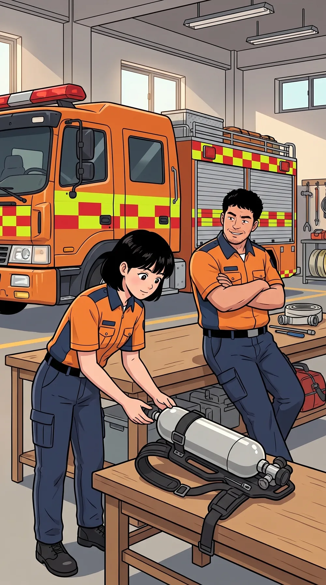
하늘선배, 오늘은 조용하네요.
정우그 말 하면 꼭…
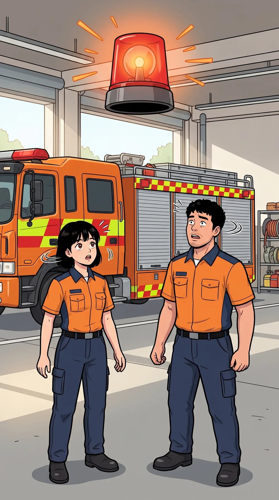
지령화재출동! 화재출동! 가람구 한솔아파트 4층 공사장 화재 —
119종합상황실.
지령현재 다량의 검은연기와 불꽃이 보인다고 함. 신고자에 의하면 다수의 작업자가 대피하지 못했고 동일신고 다수 접수.
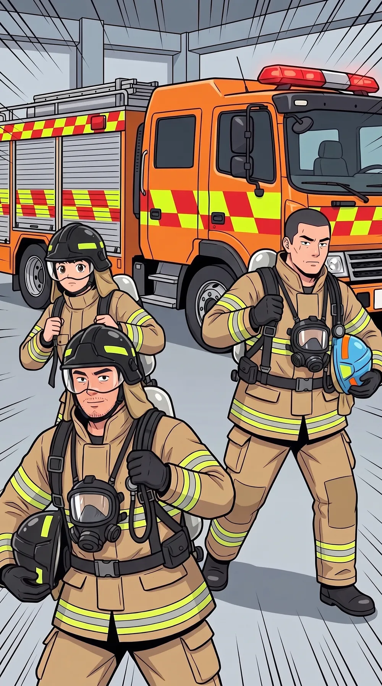
출동은 장비 점검과 개인보호장비 착용에서 시작한다.
지령현장지휘관은 상황판단 후 내부진입 여부 결정! 선착대는 진압1대 신속 비발!!
선착대장 강도윤. 선착대 — 현장에 가장 먼저 도착하는 출동대.
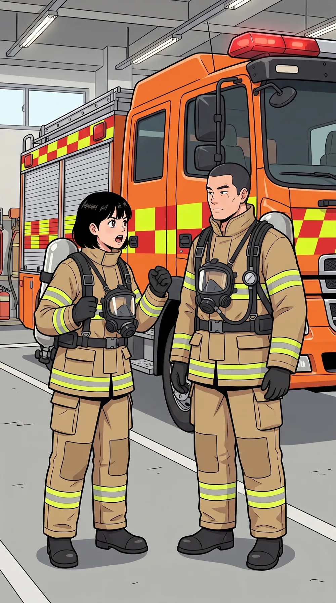
하늘작업자가 다수 갇혔대요! 도착하면 바로 들어가야죠!
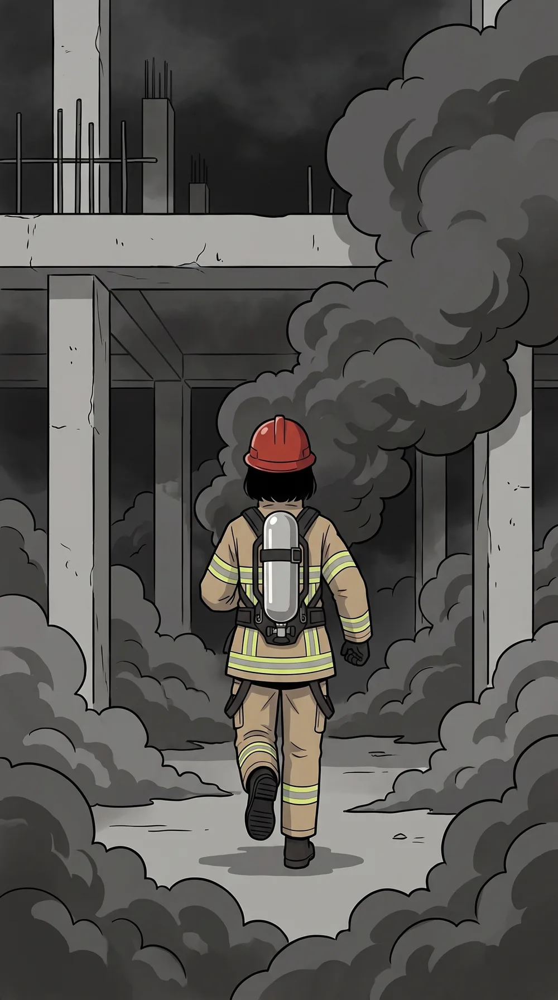
✕ 잘못된 예
지휘관의 진입 명령 없는 단독 내부 진입.
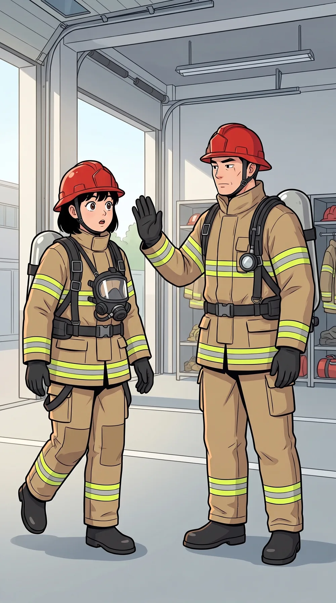
도윤아니. 지령 끝을 다시 들어 봐.
지령(회상)현장지휘관은 상황판단 후 내부진입 여부 결정!
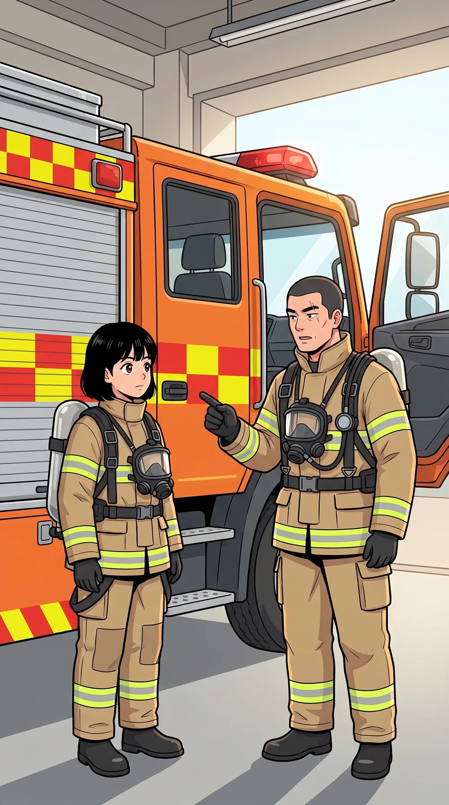
현장지휘관의 진입 명령 없이는 내부 진입이 금지된다.
도윤들어갈지는 현장지휘관이 보고 판단한다. 들어가기로 하면 무전으로 명령한다. 명령 없는 내부 진입은 없다.
강도윤은 이 차의 운행 책임자다. 운행 책임자 — 예전 말로 '선탑자'.
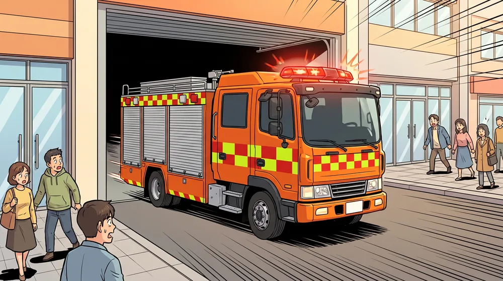
비발 — 출동.
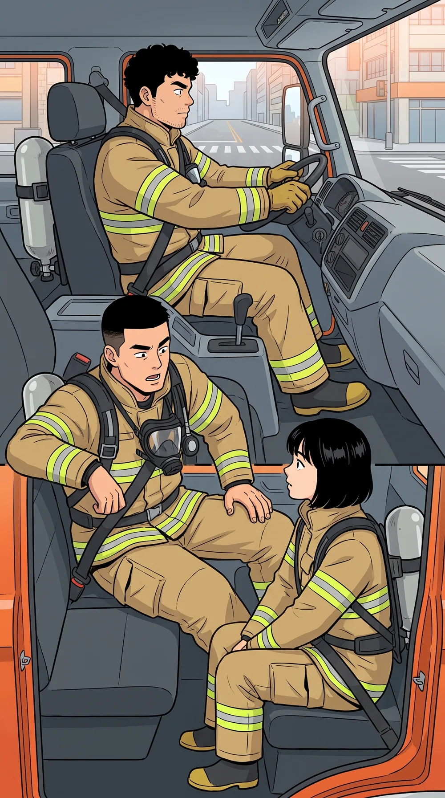
도윤지령에서 먼저 뽑을 건 세 가지다. 무엇이, 얼마나 크게, 사람은.
재난유형
규모
인명피해
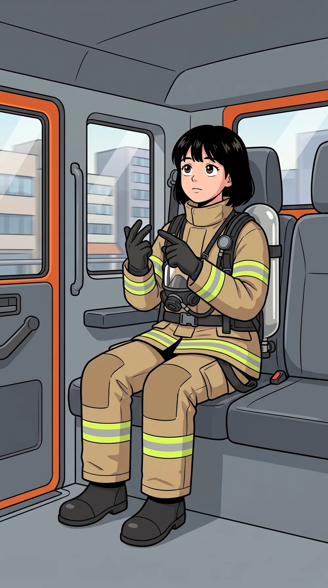
하늘유형은 공사장 4층 화재. 규모는… 검은연기와 불꽃이 다량, 동일신고 다수. 사람은 작업자 다수 미대피!
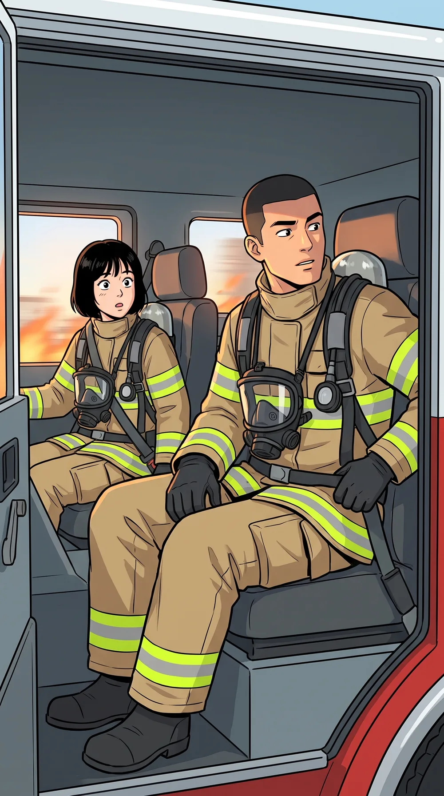
도윤그건 지금 들어온 정보일 뿐이다. 초기 정보는 부정확하고, 계속 바뀐다.
출동접수 즉시, 대상물 용도·기상·시간대를 기초로 출동대 규모가 충분한지 예측한다.
도윤공사장 — 용도. 평일 오후 — 작업자가 있을 시간대. 바람은… 약하다.
도윤15층 공사장, 미대피자 다수. 지금 편성으로 충분한가?
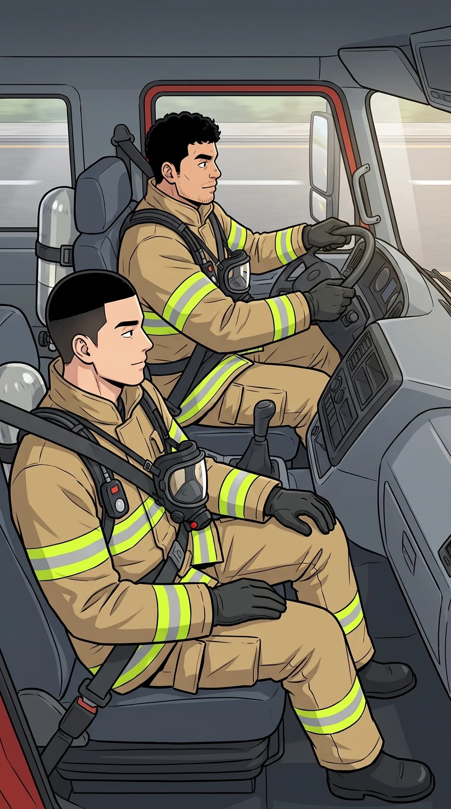
정우모자라면요?
도윤부족하다고 판단되면 추가자원을 요청한다. 과소평가보다 과대평가가 낫다.
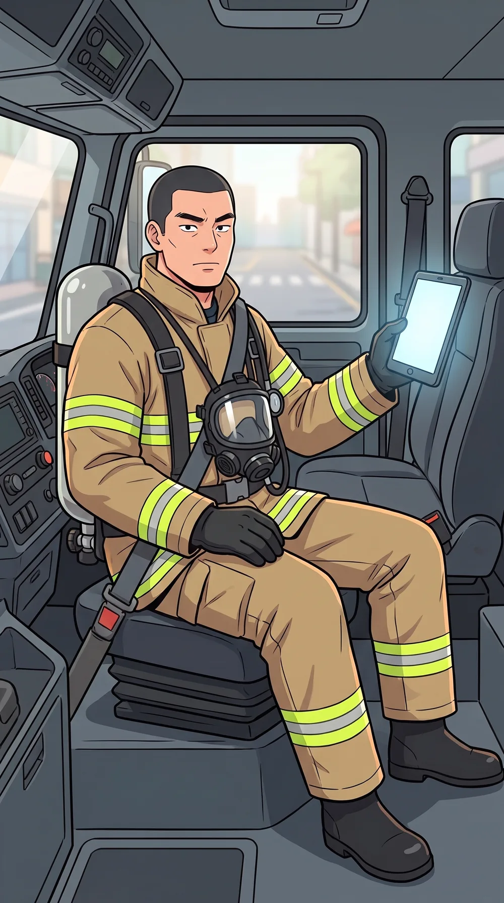
출동 중에도 추가 소방력을 판단하고 요청할 수 있다.
도윤그 판단은 가면서 들어오는 정보까지 보고 한다.
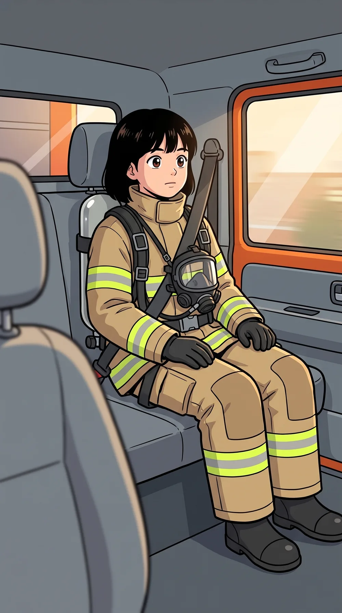
아직 도착도 안 했는데, 지휘는 벌써 시작되고 있었다.
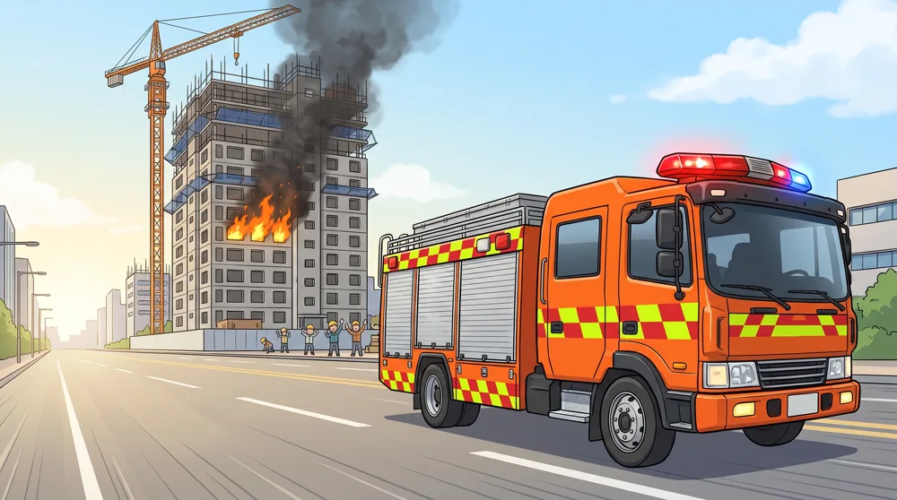
핵심 포인트
- 지령에서 재난유형·규모·인명피해를 먼저 뽑는다SOP 102 2.1.1
- 용도·기상·시간대로 출동대가 충분한지 예측한다SOP 103 1.1
- 내부 진입은 현장지휘관의 무전 명령으로만SOP 102 5.2
다음 화 — 「도착 전 지휘」.
출동 중에 무엇을 모으고, 누구에게 무엇을 미리 맡기는가.
출동 중에 무엇을 모으고, 누구에게 무엇을 미리 맡기는가.
근거: SOP100-113 지휘통제절차 해설(2025.12. 개정판) · 등장 인물·지명은 가상입니다.
ICTC 지휘역량강화센터 교육용
ICTC 지휘역량강화센터 교육용